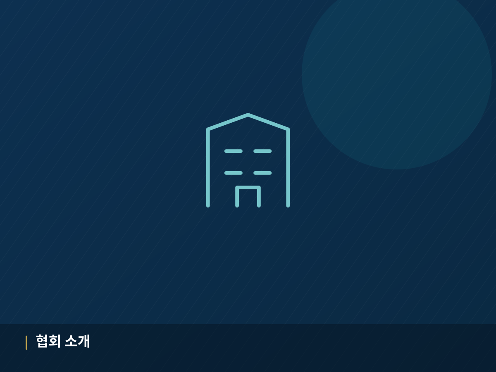
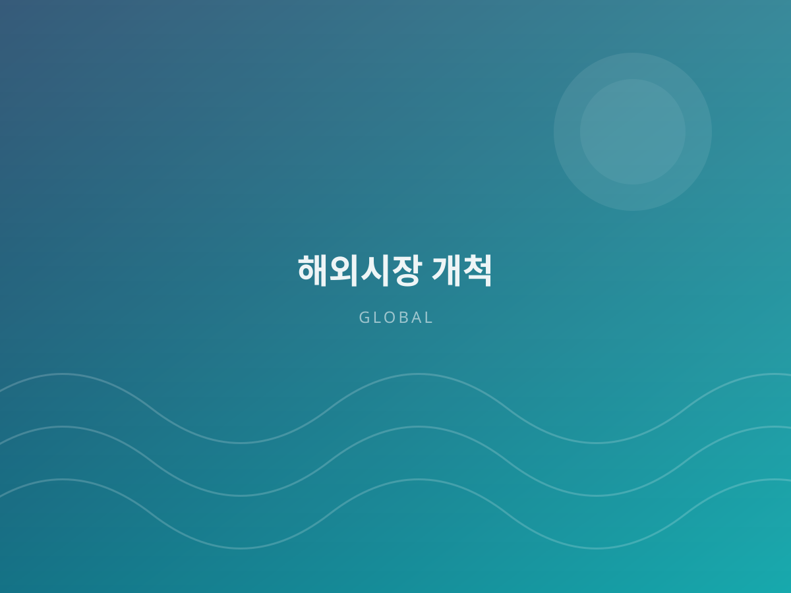
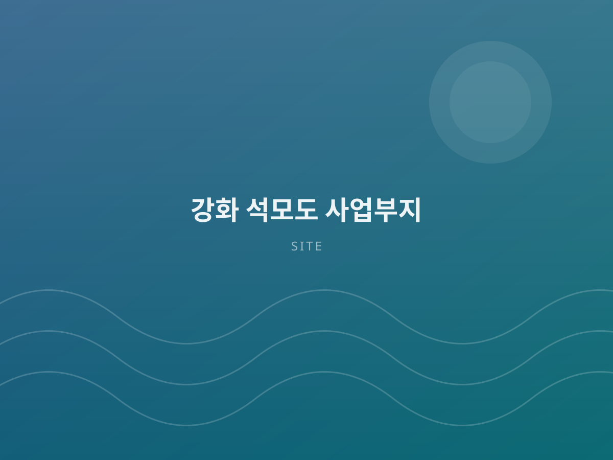

터널형 스마트 양식 플랜트Tunnel Aquaculture Plant
암반 산지를 굴착한 초대형 지하 양식장으로 기후 재난과 완전히 격리된 생산 환경을 구축합니다. A vast underground farm carved into bedrock, fully isolated from climate disasters.
사단법인 한반도양식기술보급협회는 지중열과 파스칼의 원리를 활용한 친환경 무동력 터널형 스마트 양식 플랜트로 폭염·고수온·적조·태풍에 영향받지 않는 전천후 양식 환경을 구현합니다. KPATA delivers a power-free tunnel-type smart aquaculture plant — using geothermal heat and Pascal's principle to create an all-weather farming environment immune to heatwaves, red tides and typhoons.
암반 산지를 굴착해 외부와 완전히 차단된 초대형 지하 터널형 양식장. 남극의 혹한부터 적도의 폭염까지 어떤 기후에서도 운영 가능합니다. A vast underground tunnel farm carved into bedrock — operable from polar cold to equatorial heat.
기술 자세히 보기See the technology외부 환경과의 완전한 차단, 전기 모터 없는 순환, 그리고 항생제 없는 생태 양식. 협회의 독자 기술이 하나의 시스템으로 결합됩니다. Complete isolation from the environment, circulation without electric motors, and antibiotic-free ecological farming — combined into one system.
NATM 공법과 분할 굴착으로 진동을 최소화하고, 장대 락볼트와 강섬유 숏크리트로 암반 아치를 형성해 붕괴 위험을 차단했습니다. 고내구성 내염 콘크리트 라이닝과 전면 방수 시트로 염분 침투를 막습니다. NATM tunnelling with split excavation minimizes vibration; long rock bolts and steel-fibre shotcrete form a stable rock arch. Salt-resistant concrete lining and full waterproofing block seepage.
파스칼의 원리를 응용해 고지대 저수조의 위치 에너지와 낙차 압력만으로 대용량 수량을 순환시킵니다. 전력 사용 없이도 24시간 안정적인 수질 순환이 가능하며, 계단식 저면 구조로 슬러지가 중력에 의해 자동 포집됩니다. Applying Pascal's principle, elevated reservoirs circulate large volumes using head pressure alone — 24-hour water quality control without electricity, with gravity-fed sludge collection.
항생제와 인공 사료에 의존하지 않는 생태 순환형 양식을 지향합니다. 폐쇄 순환형 시스템으로 배출수에 의한 해양 오염을 차단하고, 가장 건강한 먹거리 생산을 목표로 합니다. An ecological cycle that avoids antibiotics and artificial feed. The closed-loop system prevents effluent pollution while producing the healthiest possible seafood.

고수온과 적조, 태풍은 해마다 거세지고 있습니다. 사단법인 한반도양식기술보급협회는 한반도해안천여의도연구소와 함께 공간·에너지·생태 기술을 융합해, 기후 재난으로부터 양식 생물을 완전히 격리하는 새로운 생산 방식을 만들어 왔습니다. Heatwaves, red tides and typhoons grow fiercer each year. Together with the Hanbando Coastal Stream Yeouido Research Institute, we have developed a production method that fully isolates farmed life from climate disaster by combining spatial, energy and ecological engineering.
육·해상 축제식 양식 및 수온 조절 관련 국내외 특허를 보유하고 있습니다. Domestic and international patents in enclosure farming and water-temperature control.
남극의 혹한부터 적도의 폭염까지 기후 조건에 제약이 없습니다. From polar cold to equatorial heat — no climate constraint.
전기 모터 없는 순환 구조로 냉·난방비와 펌프 전력을 절감합니다. Motor-free circulation cuts heating, cooling and pumping costs.
대량 생산 체계로 수산물 자급률과 어촌 경제에 기여합니다. Scaled production supporting self-sufficiency and coastal economies.
기술보급부터 교육, 안전, 해외 진출까지 수산산업의 전 과정을 지원합니다. From technology transfer to training, safety and export — we support the full value chain.
암반 산지를 굴착한 초대형 지하 양식장으로 기후 재난과 완전히 격리된 생산 환경을 구축합니다. A vast underground farm carved into bedrock, fully isolated from climate disasters.

지하 900m 심층염지하수를 저온 농축해 만드는 에너지 자립형 프리미엄 천일염 생산 사업입니다. Premium sea salt from deep brine groundwater, concentrated at low temperature with self-generated energy.
보유 특허 기술을 현장에 보급하고, 수산산업 종사자를 위한 기술향상 교육과 해양 안전교육을 운영합니다. Transferring our patented technology to the field, with skill training and marine safety education.

전천후 운영이 가능한 기술 특성을 바탕으로 해외 플랜트 수출과 국제 협력을 추진합니다. Exporting plants and building international partnerships on the strength of all-climate operability.
“기후 위기는 이미 시작되었습니다. 바다가 더워지고 태풍이 거세지는 시대에, 우리는 바다를 땅 아래로 옮겨 지켜내는 길을 택했습니다. 기술은 나눌수록 커집니다.” “The climate crisis has already begun. As seas warm and storms intensify, we chose to move the sea underground and protect it there. Technology grows when it is shared.”

2026-01-02
2026-01-15

2026-02-10
교육 현장, 기술 보급 사례, 해외 활동을 영상으로 확인하실 수 있습니다. 협회 공식 유튜브 채널에서 더 많은 영상을 만나보세요. See our training sessions, technology transfer cases and international activities. More videos on our official YouTube channel.
협력 기관 · 참여 기업PARTNERS & COLLABORATORS
교육 신청, 기술 자문, 업무 협약, 후원까지 — 편하게 문의해 주세요. Training, technical advisory, partnership agreements and support — just reach out.